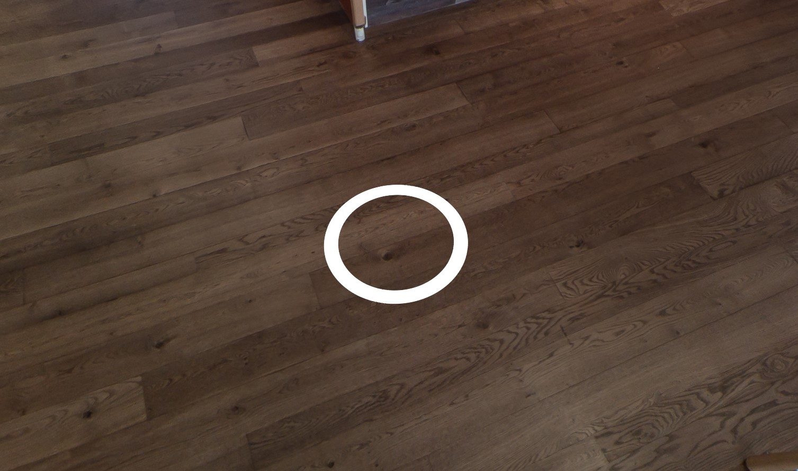

Components of Vour
1. Location Manager
The Location Manager manages which locations should be activated and which location is activated first. Since it contains all meshes & components to visualize the images/videos, it also manages the activation of these meshes & components.
2. Player
The player prefab automatically instantiates the PC or VR player. When the Center Camera option is enabled, the camera will always stay at (0, 0, 0). If you want to just have the PC player or just the VR player, get the prefab at Assets > Vour > Prefabs > Players and replace the player prefab with it.
Note
The player prefab has to be placed on the ground if you have Center Camera disabled because it has a 1.7m Y-offset when in PC mode (which you can edit in the prefab), and floor tracking is enabled in VR.
3. Locations
Locations contain data of your video/image and contain all objects like Teleport Points, Info Points or custom objects that you want to use for that location.
4. Teleport Points
Teleport Points are placed in a Location in 3D space. For example, you can place it so that it looks like it is on the ground in a 360° location. You can add a Teleport Point by clicking on the button in the Location object.

5. Info Points
Info Points can display a short text and a image on the left or right side. You can add a Info Point by clicking on the button in the Location object.